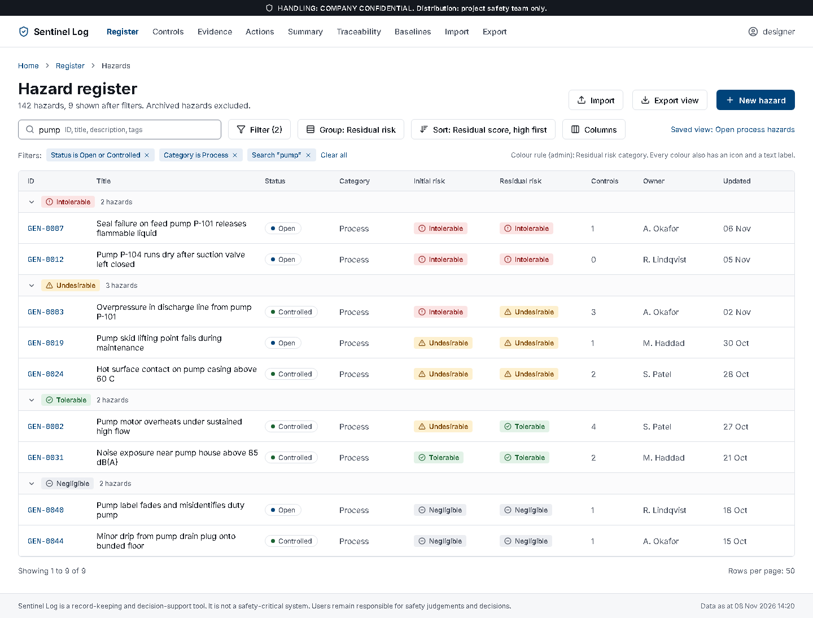

UC-19: View, edit or archive a hazard from the register list. Actor: Hazard owner
Main flow
- editor opens /hazards/ with no filter; UAT-0001 lists and UAT-0003 is absent, and the scope line states archived hazards are excluded (req-1, req-103).
- editor filters by status open; UAT-0001 remains listed (req-26).
- editor opens UAT-0001 and edits its description, then saves; detail shows the new text and the configured status label (req-3, req-94).
- editor opens the archived filter; UAT-0003 lists and its detail page carries the archived banner (req-1).
- editor restores UAT-0003 from its detail page; it returns to the default list (req-1).
- editor archives UAT-0003 again from its detail page; it leaves the default list (req-1).
Stills
